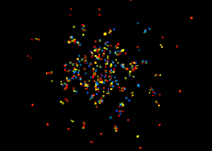

Exophysics Exhibition
This is the museum of explored worlds, known to display interesting emergent properties.
Feel free to experiment with your own universes. First, either download the current Exophysics HTML file, or download one of the universes below by right-clicking the image and clicking "Save link as...". Then open the file in a text editor, change whatever you like, and open the HTML page in your browser to run the simulation. If you stumble on something cool that you would like to share, please send it to the author via an email to curator໑exophysics.net.
You can use mouse clicks and the "." and
"space" keys to interact with particles, though
every universe is a little different, and it might not work
everywhere.
Finally: EPILEPSY WARNING
Exhibits

Edracia
- Code: link
- Discovery: 2020-10-18, by hut
- Properties:
- Forces: gravity, electric (3 charges)
- 2-3 particles of different charge form stable molecules
- Forms plasma under pressure
- Gravity forms star-like object that evaporates, and ejects particles
- Particles have two velocity vectors, one per force (gravity, electric), with their own maximum velocity